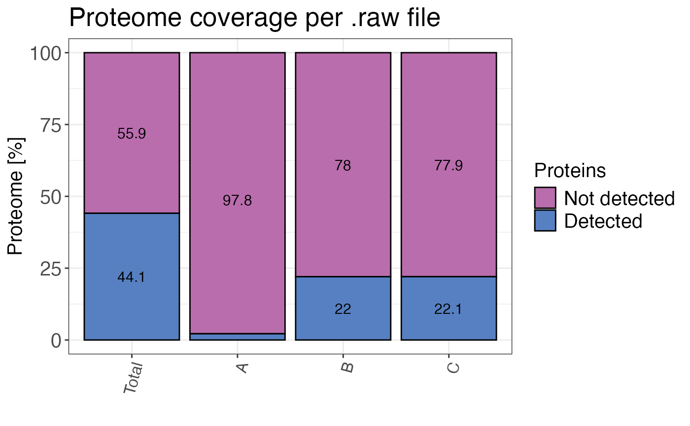

Calculates the proteome coverage for each samples and for all samples combined. In other words t he fraction of detected proteins to all proteins in the proteome is calculated.
qc_proteome_coverage(
data,
sample,
protein_id,
organism_id,
reviewed = TRUE,
plot = TRUE,
interactive = FALSE
)a data frame that contains at least sample names and protein ID's.
a character column in the data data frame that contains the sample name.
a character or numeric column in the data data frame that contains
protein identifiers such as UniProt accessions.
a numeric value that specifies a NCBI taxonomy identifier (TaxId) of the organism used. Human: 9606, S. cerevisiae: 559292, E. coli: 83333.
a logical value that determines if only reviewed protein entries will be considered as the full proteome. Default is TRUE.
a logical value that specifies whether the result should be plotted.
a logical value that indicates whether the plot should be interactive (default is FALSE).
A bar plot showing the percentage of of the proteome detected and undetected in total
and for each sample. If plot = FALSE a data frame containing the numbers is returned.
# \donttest{
# Create example data
proteome <- data.frame(id = 1:4518)
data <- data.frame(
sample = c(rep("A", 101), rep("B", 1000), rep("C", 1000)),
protein_id = c(proteome$id[1:100], proteome$id[1:1000], proteome$id[1000:2000])
)
# Calculate proteome coverage
qc_proteome_coverage(
data = data,
sample = sample,
protein_id = protein_id,
organism_id = 83333,
plot = FALSE
)
#> # A tibble: 8 × 3
#> sample type percentage
#> <fct> <fct> <dbl>
#> 1 A proteins_detected 2.21
#> 2 A proteins_undetected 97.8
#> 3 B proteins_detected 22.1
#> 4 B proteins_undetected 77.9
#> 5 C proteins_detected 22.1
#> 6 C proteins_undetected 77.9
#> 7 Total proteins_detected 44.2
#> 8 Total proteins_undetected 55.8
# Plot proteome coverage
qc_proteome_coverage(
data = data,
sample = sample,
protein_id = protein_id,
organism_id = 83333,
plot = TRUE
)

# }